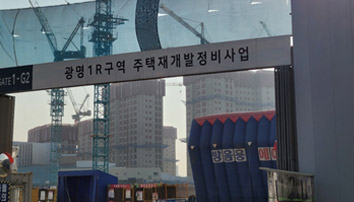
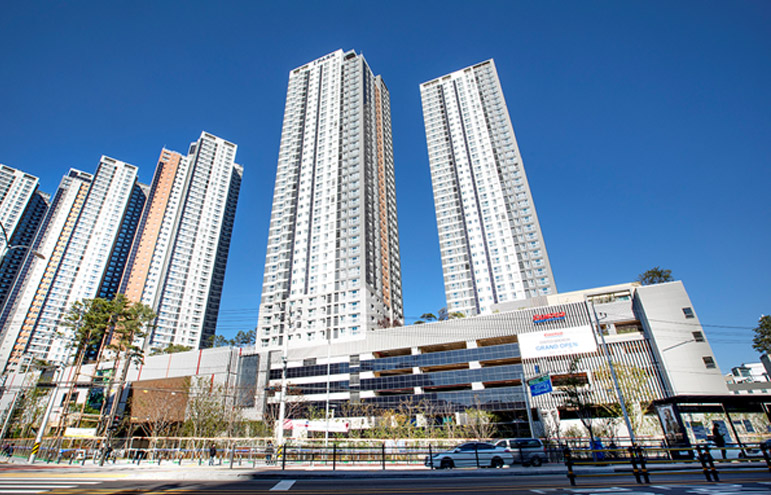
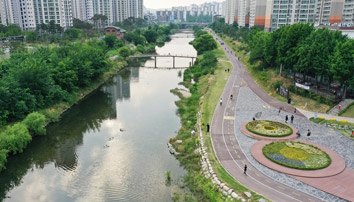
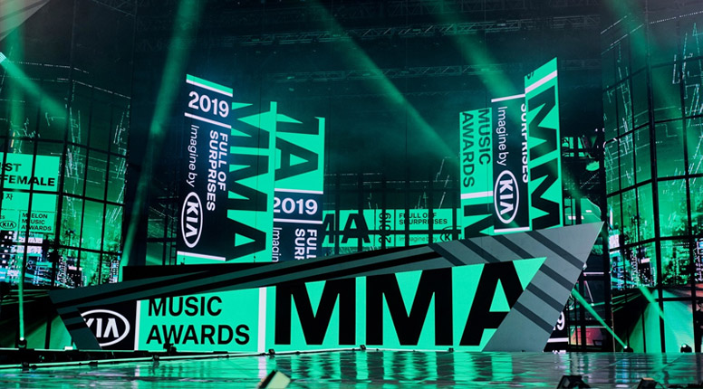

경기도 광명은 서울과 가까운 경기도의 한 도시로만 알려져 있습니다.
하지만, 자세히 들여다보면 다양한 매력이 있는 광명인데요.
알면 알수록 더 매력적인 광명을 동, 서, 남, 북 나누어 자세히 파헤쳐 보겠습니다.
경기도 광명은 서울과 가까운 경기도의 한 도시로만 알려져 있습니다.
하지만, 자세히 들여다보면 다양한 매력이 있는 광명인데요.
알면 알수록 더 매력적인 광명을 동, 서, 남, 북 나누어 자세히 파헤쳐 보겠습니다.
신(新) 주거 단지로 변화하는 북(北) 광명
광명시는 지역번호 ‘02’를 사용하는 서울 생활권으로 알려져 있습니다. 이러한 광명이 새로운 주거 단지로 탈바꿈하고 있습니다. 광명시는 지난해만해도 규제 지역으로 남아있다가 올해 규제 해제로 재정비 및 재건축 사업에 활기가 도는 모습입니다.

<광명1R 재개발 현장. 출처 : 직접 촬영>
올해 초 시점으로 가볼까요? 지난해 공급된 ‘철산자이 더 헤리티지’는 시장 불확실성 속에서도 선착순 청약에서 결국 모든 가구가 주인을 찾아갔습니다. 그만큼 광명시는 서울과 가장
인접한 수도권 지역으로 입지 측면에서 미래 가치가 높다는 평가가 반영됐다는 증거이기도 하죠. 대대적인 변화가 예상되는 광명뉴타운 재개발·재건축 현황도 살펴볼까요?
광명뉴타운은 경기도 광명시 광명동 일대를 총 11개 구역으로 나누어 재정비에 들어가는데요. 현재 15구역 (광명푸르지오센트베르)과 16구역(광명아크포레자이위브)은 공사가 끝난 상태입니다.
1·2·4·10·14구역은 착공 후 본 공사가 진행 중이죠. 이중 1구역은 이달 GS건설, 포스코이앤씨. 한화 건설부문이 ‘광명자이더샵포레나’ 3585가구를 분양합니다. 또 5·9·11·12 구역은 관리처분계획인가까지 마쳤습니다.
바로 옆 철산동도 살펴봐야겠죠. 핵심 입지로 꼽히는 8·9단지는 ‘철산자이 더 헤리티지’로 공급돼 올해 초 계약을 모두 완료했습니다. 철산주공12·13단지도 올해 초 안전진단을 통과하면서 재건축이 확정됐습니다. 현지 조사(예비안전진단)를 통과한 철산동 및 하안동 13개 단지도 올해 평가 기준이 개정되면서 안전진단 문턱이 낮아져 발 빠른 사업 추진이 전망됩니다

<코스트코 고척점. 사진 코스트코코리아>
광명뉴타운… “완전 서울이네”
얼마나 가까이 닿아 있길래 ‘서울 생활권’이라는 말이 나오는 걸까요? 광명시 지도를 펼쳐보면 광명시 광명뉴타운과 철산동을 품고 있는 북쪽은 서울과 하천(河川)을 경계로 두고 밀접하게 맞닿아 있습니다.
광명시 북쪽 끝단에 자리잡은 곳이 광명1동입니다. 광명1동은 목감천을 사이에 두고 구로구 개봉동과 마주보고 있습니다. 그 옆에 위치한 철산1·2동은 안양천을 사이에 두고 구로1동과 나란히 위치해 있죠. 실제로 목감천은 구로구 오류동과 개봉동, 광명시 광명동과 철산동 주민들이 한 데 모여 운동하는 산책로이기도 합니다.

<안양천 전경>
서울의 중심지를 관통하는 지하철 1호선 개봉역도 불과 1km가 채 되지 않는 거리에 자리잡고 있습니다. 개봉역은 1호선 급행열차가 정차하는 역이라는 점 알고 계셨나요? 개봉역에서 급행열차를 타면 구로, 신도림, 영등포에 이어 한강 건너 서울역. 시청, 용산까지 30분 내외로 이동할 수 있습니다.
생활권을 이야기할 때 ‘직주근접’도 빠질 수 없습니다. 가장 가까운 주요 업무단지로는 가산디지털단지역을 중심으로 한 디지털 밸리가 있습니다.
서울교통공사에 따르면 가산디지털단지역은 2022년 기준 일평균 승하차 승객 수는 7만 1,032명으로 7호선 역 중 가장 많은 사람들이 타고 내린 역이기도 한데요. 광명 북쪽 기준으로, 철산2동을 지나 안양천을 건너기만 하면 되는 2.5km이며, 지하철 7호선 광명사거리역에서 단 두 개역만 통과하면 도착합니다.
쇼핑은 물론 국내 최초 돔 야구장까지 우리 집 가까이!
단순히 물리적 거리만 가깝다고 서울 생활권이 될 순 없겠죠. 인접한 서울 자치구의 인프라를 공유하는 것도 중요하다고 할 수 있죠. 그런 관점에서 광명 북쪽은 서울 구로구와 금천구를 비롯해 신도림, 영등포구까지 인근 자치구의 쇼핑·문화시설을 공유하고 있습니다.
구로구로 가볼까요? 지난해 전 남부교정시설 영등포교도소가 이전하면서 그 자리에 코스트코 고척점이 들어섰습니다.
코스트코 고척점은 코스트코가 21년만에 서울에 오픈한 매장이라 더 주목받았는데요. 이 곳은 ‘생활 밀착형 데일리 MD’를 지향하기 때문에 소규모 쇼핑이 목적인 일일 방문자 수도 많고, 최근 핫한 F&B 브랜드들도 대거 입점해 주말마다 인산인해를 이루고 있습니다.
구일역 인근 고척스카이돔도 가봐야죠. 고척스카이돔은 국내 최초 돔형 야구장이며, 여러 콘서트가 열리는 장소이기도 합니다. 지금은 프로구단 키움히어로즈의 홈구장으로 쓰이고 있는데요

<안양천 벚꽃길. 출처 : 광명시 공식 블로그>
고척돔은 지난해 한국시리즈마다 매진을 기록했던 구장이기도 합니다. 작년 11월에는 MMA(멜론뮤직어워드) 2022가 3년만에 고척돔에서 열리면서 들썩이기도 했죠. 이처럼 광명 북쪽은 구(九)도심 광명뉴타운과 서울 두 지역의
인프라를 누리는 더블생활권입니다. 그만큼 주거 편의성도 높고 미래 가치도 높다고 평가되는데요. 이러한 광명 북쪽을 중심으로 재개발·재건축이 활발해지면서 북(北)광명은 많이 이들이 주목하는 주거 타운으로 거듭나고 있습니다.